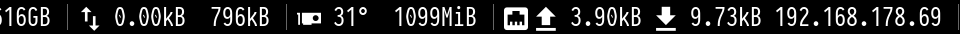

D4: rs bar polish
Look pass (2026-11-17): "mixed GiB/GB/MiB units" and "disk io numbers unlabeled". Two choices are yours: the unit family and the disk read/write markers. Dim icons and moving the pads after the values are already picked (spec.md). Answer in the chat with the line at the bottom.
Today

616GB, IO 0.00kB 796kB without markers, GPU 1099MiB; only the time icons are dim.70GiB; the freq counts sit 5 spaces away from their icon.Question 1: one unit family for memory, disk, disk IO, net speed and GPU memory
A. Decimal: GB / MB / kB recommended
B. Binary: GiB / MiB / KiB
Why the designer is against B: the bar switches binary prefixes at 1024, so values 1000-1023 print 4 digits and the block grows by a char (breaks "fixed width"); every unit is also 1 char longer.
Question 2: disk read/write markers
A. Dim letters R / W recommended
B. Glyphs: eye (read) / pencil (write)
Why the designer is against B: three pictograms in one small block; the eye reads as "visible" rather than "read". Net-style arrows were also rejected: same arrows as the net block.
Picks
What doesn't change
- Widget order, the colors of values (good/degraded/bad), freq color palette.
- Block widths stay fixed; the DP-2 compact bar still drops disk, IO, ccusage and the IP.